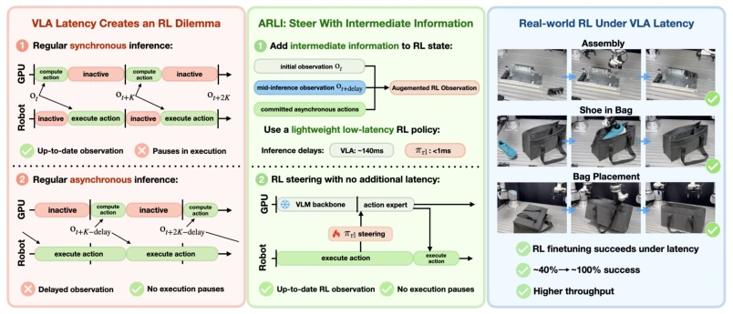
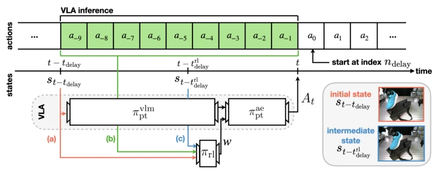
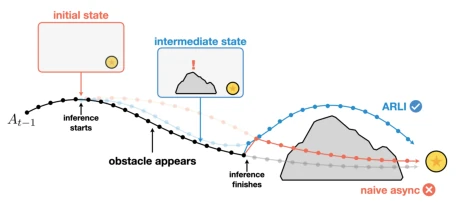
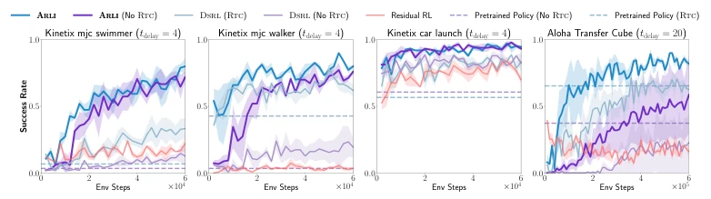
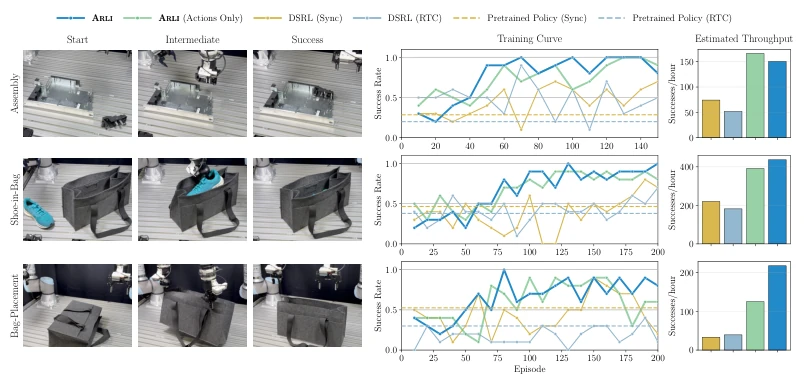
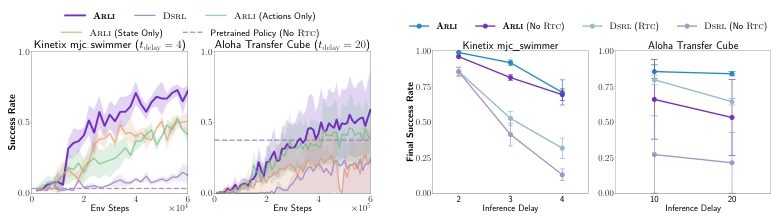
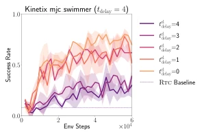
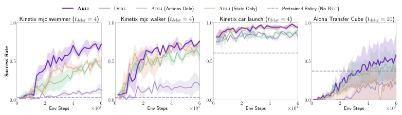
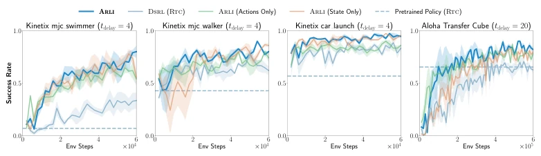
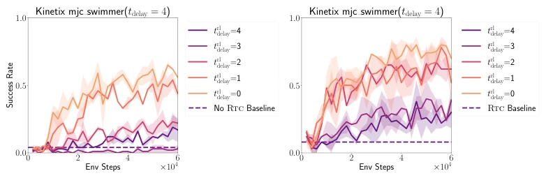

This paper pours cold water on robot researchers obsessed with "large models are justice": the larger the model, the slower the inference, and the easier reinforcement learning (RL) collapses. The authors keenly point out that existing asynchronous inference strategies, while masking latency, destroy the Markov assumption upon which RL relies, causing standard algorithms to fail directly. The ARLI framework, by "peeking" at intermediate states and actions, forcibly pulls non-Markovian environments back on track; this is theoretically attractive and a lifeline on real machines. However, this approach has weaknesses: it strongly relies on VLA models being splittable into "visual backbone" and "action expert" parts; for black-box or differently architected models, this "intermediate queue-jumping" trick may not work. Furthermore, although real-world effects are stunning, introducing RTC (Real-Time Chunking) improves stability but may sacrifice the RL policy's immediate reaction capability under extreme dynamics, a trade-off worth deep thought. Overall, this is a very solid paper on the realistic pain point of "latency"; although it does not solve all problems, it indeed makes RL from "impossible" to "possible" in latency environments.
With the rise of Generalist Robot Policies such as VLA (Vision-Language-Action models), model parameter counts have reached the billions level, causing Inference Latency to become a fatal flaw in deployment. For example, running the π0 model on consumer-grade GPUs to generate a single action takes about 100 milliseconds, while other models even exceed 300 milliseconds [6]. If this latency is not handled properly, it will cause robot actions to pause or jitter, alter environment dynamics, and further destroy the Markov assumption relied upon by RL algorithms, making standard RL optimization completely invalid. Existing work mainly focuses on how to deploy fixed policies under latency, such as alleviating discontinuities brought by latency through Action Chunking [26], Temporal Ensembling [26], or Diffusion Inpainting [21], but these methods do not solve the problem of Online RL Improvement. Especially when combined with Asynchronous Inference, since the true state during action execution cannot be obtained, leading to state non-Markovianization, making direct application of methods based on DSRL (Diffusion Steering via Reinforcement Learning) [12] unable to converge. Therefore, there is an urgent need for a new framework that can effectively utilize intermediate information to restore Markov structure and achieve RL fine-tuning under asynchronous inference latency.

Figure 1: Enabling RL improvement of generalist robot policies under inference latency: Gen- eralist policies incur significant action inference latency delays, either forcing pauses during in- ference or relying on stale observations, making RL improvement brittle. ARLI uses intermediate actions and updated asynchronous observations to steer the next action chunk, enabling effective real-world improvement under asynchronous inference, and real-world VLA improvement.
The paper proposes the ARLI (Asynchronous RL with Intermediate Information) framework, aiming to solve the RL fine-tuning problem under asynchronous inference. Its core pipeline is: within the delay window when the pre-trained policy πpt (such as VLA) starts calculating the next Action Chunk, a lightweight RL policy πrl runs in parallel. The role of πrl is not to generate actions directly, but to select the optimal noise input for πpt's Denoising process (i.e., the Action Expert part), thereby "guiding" πpt to generate better actions. To cope with the non-Markov problem caused by latency, ARLI implements two key State Augmentations: First, include "Intermediate Actions" in the RL state. Since πpt usually predicts action chunks, during inference, the environment is executing the subsequent part of the previous action chunk; these known intermediate actions provide strong predictive information for future states. Second, utilizing the separability of the VLA architecture (VLM Backbone + Action Expert), obtain an "Intermediate State" within the extremely short window where VLM inference is completed but Action Expert has not yet started denoising. The RL policy πrl is designed to run at time t - t_rl_delay, at which time it can not only see the initial state but also see the intermediate actions and this updated intermediate state. This design allows πrl to make decisions based on "fresher" information than πpt, thereby approximately restoring Markov properties under asynchronous latency. In addition, the framework integrates RTC (Real-Time Chunking) technology, ensuring smooth transitions between action chunks through Inpainting Guidance, preventing RL fine-tuning from destroying the original temporal consistency.

Figure 2: An overview of our approach, ARLI. Inference begins tdelay steps before the next action chunk is required, in which the VLM backbone πvlm pt takes state st−tdelay as input. At step t−trl delay, RL policy πrl must be run to ensure that the action expert πae pt is provided a noise input w once VLM inference finishes. πrl is conditioned on (a) the initial state st−tdelay, (b) intermediate actions a−9:0, and (c) intermediate state st−trl delay. Once the action expert’s inference is complete, the next action played, a0, starts at step ndelay within the newly-generated chunk At.

Figure 3: The benefit of intermediate state conditioning: In naive asynchronous inference, the initial state does not capture stochastic events (e.g., moving obstacles). By having the ability to condition on an intermediate state, our policy is capable of reacting to disturbances.
实验Experiments
作者在Kinetix基准（Swimmer, Walker, Car Launch）和Aloha Transfer Cube仿真任务，以及UR5e双臂机器人的三个真实任务（Assembly, Shoe-in-Bag, Bag-Placement）上进行了评估。基线包括直接应用DSRL、带RTC的DSRL、Residual RL以及同步推理策略。结果显示，在仿真环境中，ARLI显著优于所有基线，特别是在高延迟（tdelay=20）下，ARLI能收敛到接近100%的成功率，而DSRL完全失败。在真实世界中，ARLI将基线策略约40%的成功率提升至近100%，且训练效率（Successes/hour）远超同步推理和带RTC的DSRL。消融实验表明，同时使用“中间动作”和“中间状态”是性能提升的关键，仅用其中一项效果大打折扣。此外，ARLI对延迟参数（tdelay, t_rl_delay）表现出较好的鲁棒性，随着延迟增加，其性能衰减慢于DSRL。
The authors conducted evaluations on the Kinetix benchmark (Swimmer, Walker, Car Launch) and Aloha Transfer Cube simulation tasks, as well as three real tasks on the UR5e dual-arm robot (Assembly, Shoe-in-Bag, Bag-Placement). Baselines include direct application of DSRL, DSRL with RTC, Residual RL, and synchronous inference strategies. Results show that in the simulation environment, ARLI is significantly superior to all baselines, especially under high latency (tdelay=20), where ARLI can converge to nearly 100% success rate, while DSRL completely fails. In the real world, ARLI improved the baseline policy's success rate from about 40% to nearly 100%, and training efficiency (Successes/hour) far exceeded synchronous inference and DSRL with RTC. Ablation studies show that using both "Intermediate Actions" and "Intermediate State" simultaneously is key to performance improvement; using only one of them significantly reduces effectiveness. In addition, ARLI shows good robustness to latency parameters (tdelay, t_rl_delay); as latency increases, its performance degradation is slower than DSRL.

Figure 4: Comparison of ARLI and DSRL on simulation tasks with and without RTC.

Figure 5: Comparison of ARLI against other RL finetuning methods on real-world tasks. Left: task images. Middle: training success curves corresponding to average success rate in the last 10 episodes. Right: estimated throughput in successes/hour computed based on the duration of each success in the last 20 episodes and assuming failure is declared after 2x average success duration.

Figure 6: Variants of ARLI (no RTC) with one of intermediate state or actions on mjc swimmer and AlohaTransferCube.

Figure 8: ARLI performance at varying RL inference delays on mjc swimmer.

Figure 9: Variants of ARLI (no RTC) with one of intermediate state or actions on mjc swimmer, mjc walker, car launch and AlohaTransferCube.
其他图片Other Figures

Figure 10: Variants of ARLI (with RTC) with one of intermediate state or actions on mjc swimmer, mjc walker, car launch and AlohaTransferCube.

Figure 11: ARLI performance at varying RL inference delays on mjc swimmer. Left: without RTC. Right: with RTC.